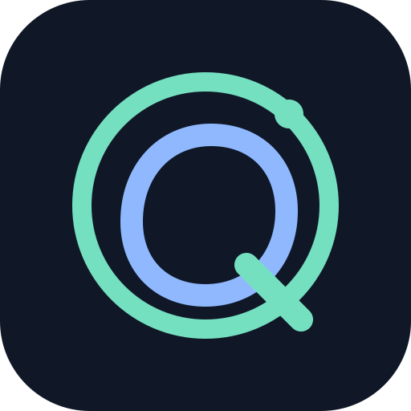

Opportunity directory
Airdrops, Telegram bots, referrals and reward apps, with source and verification details.
Core capability
QuestPulse A TLCE moduleDISCOVER · VERIFY · PROTECT
Explore Web3 opportunities with clearer source information and local link-structure checks.
Airdrops, Telegram bots, referrals and reward apps, with source and verification details.
Core capabilityInspect URL structure locally for selected warning signs before opening a link.
Safety capability